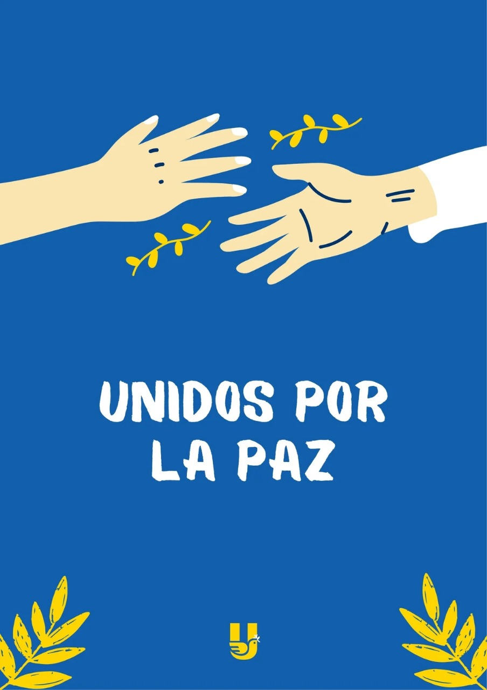

El objetivo de esta campaña es promover el respeto entre los grupos, reducir los conflictos y fomentar actividades que construyan un ambiente más seguro y solidario.
La “Semana de la Paz” será una iniciativa escolar donde cada día se realizarán actividades para fortalecer la inclusión, la igualdad y el diálogo. Participarán estudiantes, docentes y personal administrativo.
Se colocarán carteles, se impartirán charlas breves y se realizarán actividades artísticas y deportivas para reforzar los valores de convivencia pacífica.
| Actividad | Fecha | Responsables |
|---|---|---|
| Carteles de mensajes positivos | Lunes | Grupos de primer semestre |
| Círculo de diálogo y escucha | Martes | Orientación y tutores |
| Competencias sin violencia | Miércoles | Profesores de deporte |
| Día de la inclusión cultural | Jueves | Grupos de todos los grados |
Invitamos a toda la comunidad a formar parte de este proyecto. La paz comienza con pequeñas acciones que hacemos todos los días.
